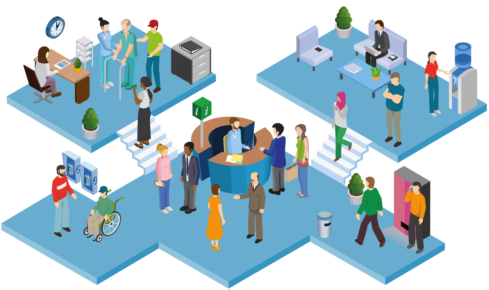

<base-nav>
</base-nav>
<md-content layout-padding>
  <div layout-gt-sm="row">
    <div flex-gt-sm=50>
      <base-logement></base-logement>
      <div ng-if="$ctrl.sim.lieuLogement && !$ctrl.isCantonSupported()">
        Malheureusement votre canton n'est acutelement pas supporté.
      </div>
      <div ng-if="$ctrl.sim.lieuLogement && $ctrl.isCantonSupported()">
        <h2>Vous</h2>
        <base-personne personne="$ctrl.sim.personnes[0]"></base-personne>
      </div>
    </div>
    <div flex-gt-sm="10">

    </div>
    <div flex-gt-sm="40">
      
    </div>
  </div>

  <div layout="row" class="nav-bottom">
    <span flex></span>
    <md-button ui-sref="foyer" class="md-primary md-hue-2 md-raised" ng-disabled="!$ctrl.canContinue()">Suivant</md-button>
  </div>
</md-content>